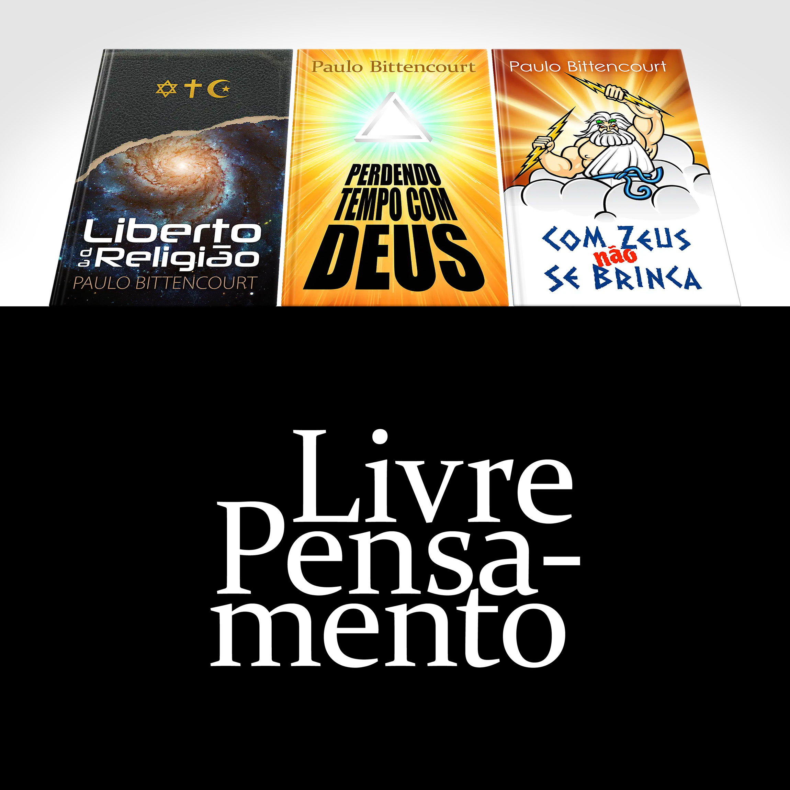

Propague o Livre Pensamento
Dedico minha vida a, por todos os meios possíveis, ajudar pessoas a se libertar da prisão religiosa.
“Quero agradecer de coração pelos conteúdos explanados nos seus livros e vídeos. Eles me ajudam a ter coragem de pensar e me dão embasamento contra a enganação que sofri desde minha infância.”
“Sou grato a você, Paulo Bittencourt, por nos ajudar a, cada dia, executar a difícil tarefa de deixar pelo caminho o lixo cultural que herdamos, abrindo nossos olhos e ouvidos para as evidências da razão.”
Quer que eu escreva mais? Quer que eu faça mais vídeos? Quer me agradecer pela minha dedicação? Se você valoriza a propagação do Livre Pensamento, apoie minha luta.
Muito obrigado!